To understand how DBS reshapes pathological neuronal unit and network activity characteristic of PD, both network effects as well as stimulation effects on a sub-cellular scale should be taken into account (Chapters 1-2). As the basis for addressing the aims determined for this thesis, this chapter introduces a biophysically detailed network model that captures both sub-cellular and network interactions of DBS, which will be further explored in Chapter ??.
Pathological oscillations in the basal ganglia-thalamocortical (BGTC) network have long been implicated in the motor symptoms of Parkinson’s disease. Beta-band (13-30 Hz) oscillations are consistently strengthened with dopamine depletion both in individuals with Parkinson’s disease (PD) and parkinsonian animal models [325, 224, 189], and are reduced by deep brain stimulation and pharmacological interventions that alleviate parkinsonian motor symptoms [190, 369, 97, 303]. The magnitude of subthalamic nucleus local field potential beta oscillations is also correlated with the severity and degree of improvement of bradykinetic/akinetic motor symptoms and rigidity [190, 42]. Although beta-band oscillations may not be causal to bradykinetic/akinetic symptoms [197], they offer potential as a biomarker for symptom severity and the underlying network pathophysiology in advanced Parkinson’s Disease. The origin of beta-band oscillations in the BGTC network, however, remains unclear. The most prominent hypotheses emphasize the importance of dopamine-modulated strengthening of particular feedback loops within the BGTC network (see Chapter 2.5.1). Computational models have provided a valuable tool with which to explore various hypotheses regarding the mechanisms by which oscillatory activity with the network is generated. These models show that under many conditions the network is prone to oscillate, through intrinsic pacemaking or susceptibility to an extrinsic rhythm.
The reciprocally connected subthalamo-pallidal (STN-GPe) network is a key site in the basal ganglia in which beta-band oscillations are manifest in Parkinson’s disease [223, 224]. This network was an early focus of modelling studies due to its reciprocally connected structure and ability to generate low frequency oscillations in tissue cultures [287]. Models of the STN-GPe as a pacemaker initially focused on the generation of low frequency oscillations within the frequency range of parkinsonian tremor [119, 349], with focus shifting to the beta-band with increasing evidence of a link between beta activity and parkinsonian motor symptoms [154, 279].
More recent experimental evidence suggests that, rather than the STN-GPe network operating in a pacemaking mode, patterning by the cortex may play a critical role in the generation of pathological beta-band oscillations in Parkinson’s disease. This is supported by observations of high functional coupling between cortex and STN [223, 220, 255, 325, 212], and that oscillatory activity in STN-GPe is contingent on input from cortex and can be abolished by disrupting them [91, 221, 343]. Cortical patterning of the STN-GPe network by means of feedback inhibition provides a proposed mechanism for this functional coupling [21, 33, 343, 223, 225]. According to this hypothesis, weak oscillatory activity arriving via cortico-STN afferents is amplified in the STN-GPe network when feedback inhibition from the GPe is offset in phase with cortical excitation. While such feedback-mediated oscillations have been observed in vivo [280] and in slices [21], the ability of the network to generate autonomous oscillations and its resonant response properties are still poorly understood. Specifically, it is not clear whether the STN-GPe network plays an active part in generating beta-band oscillations, nor whether it amplifies or merely sustains them. Neither is it fully understood how beta-band oscillations relate to other pathological patterns of neural activity in the subthalamic nucleus (STN) and external globus pallidus (GPe) that correlate more strongly with parkinsonian motor symptoms, notably increased neural bursting [314, 323]. It is clear, however, that interventions in the loop and its afferents that reduce beta-band oscillations [343] or bursting [126, 315, 273] lead to improvements in motor symptoms. Similarly, the STN [27] and GPe, in nonhuman primates [362], are effective targets for deep brain stimulation (DBS).
Previous modeling studies have focused on alterations in connection patterns and strength within or between nuclei, typically represented by mean-field or single-compartment spiking neuron models. While such models are computationally efficient, they may not fully capture the role of intrinsic properties of neurons in shaping pathological activity patterns. Although cell-specific ion channels can be used, single-compartment neuron models lump together ion channels and synapses in one isopotential compartment in a way that may not capture the complex dynamics that arise when non-uniformly distributed ion channels [120] interact with synapses associated with distinct subcellular regions [273, 116, 34]. Hence they may not fully account for the mechanisms contributing to pathological activity within the STN and the role that synaptic-ionic current interactions play in sustaining beta-band oscillations and excessive burst firing.
It has recently been demonstrated that following dopamine depletion the balance of excitatory and inhibitory synaptic currents in STN neurons is shifted toward inhibition [64, 364], known to promote burst responses by increasing the availability of and channels de-inactivated at hyperpolarized potentials [21]. In the GPe increased inhibition, caused mainly by strengthening of striato-pallidal afferents, is also believed to play a role in generating pathological oscillations as demonstrated in model simulation [349, 119, 191, 154]. Increased GPe inhibition has been suggested to cause increased engagement of HCN channels [55], which are involved in phase resetting and controlling the regularity of firing. However, whether functional coupling between BG nuclei is also moderated by the excitation-inhibition balance is not fully understood.
The aim of this study was, therefore, to understand the relative contributions of intrinsic, endogenously generated oscillations and patterning by exogenous oscillatory inputs in the generation of synchronous beta-band oscillatory activity within the STN-GPe network. A second aim was to understand how pathological oscillations and bursting patterns are related to the balance of excitation and inhibition in the STN and GPe. The STN-GPe network was modeled using biophysically detailed multi-compartmental cell models of STN and GPe neurons that capture the interaction between synaptic and intrinsic currents distributed within the dendritic structure and involved in autonomous pacemaking and bursting [120, 133]. The generation of oscillations both autonomously within the network and in response to beta frequency inputs from the cortex (CTX) and indirect pathway striatal medium spiny neurons (iMSN) was examined as the balance of excitation and inhibition within the network was systematically varied, and oscillatory inputs with varying phase relationships were added. A better understanding of the relative contribution of these different factors and their interaction has the potential to improve understanding of the mechanism of action of existing anti-parkinsonian therapies, including deep brain stimulation (DBS) and to guide the development of more effective circuit interventions.
The work presented in this chapter has been published in [185].
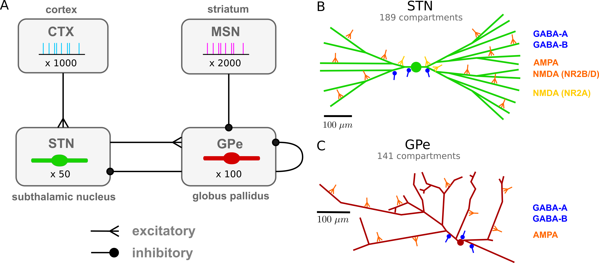
The network model of the STN-GPe network consisted of four populations of neurons (Fig. 3.1): the STN and GPe neurons, modeled as multi-compartmental conductance-based models, and their cortical and striatal inputs, modeled as Poisson or bursting spike generators.
Population sizes were chosen to preserve the decrease in population sizes and convergence of projections along the indirect and hyperdirect pathways in the basal ganglia. The STN and GPe populations consisted of 50 and 100 multi-compartmental cells, respectively, to approximate the ratio of approximately 13,000 STN cells to 30,000 GPe prototypic cells [5, 269] unilaterally in the rat. As a source of synaptic noise, an additional 10% of the cells in the STN and GPe populations were modeled as Poisson spike generators firing at a mean rate equal to the experimentally reported rate for the modeled state.
The cortical and striatal populations consisted of 1,000 and 2,000 cells, respectively, modeled as spike generators. These numbers were chosen to have 20 independent pre-synaptic spike generators per post-synaptic cell to model convergence along the hyperdirect CTX-STN and indirect iMSN-GPe projection. For the iMSN-GPe projection, convergence from all medium spiny neurons (MSN) to GPe, ignoring subpopulations, is approximately 2,800,000 MSN cells to 46,000 GPe cells [270] resulting in a convergence factor of approximately 60. Assuming that convergence is similar between iMSN and GPe prototypic neurons, the number used here is an underestimation by a factor three. Because iMSN cells in the current model spike independently and since the number of synapses per cell was lower than in reality, this was considered acceptable.
Stochastic connectivity profiles for the connections illustrated in Fig. 3.1 were generated by randomly selecting a fixed number of afferents from the pre-synaptic population for each post-synaptic cell. The ratios of number of afferents from each source population (Table 3.1) were determined, where possible, based on experimentally reported number of synaptic boutons per afferent type and the number of contacts per axon (Table 3.2). Each multi-synaptic contact was represented by a single synapse to reduce the number of simulated synapses to a more tractable number.
| target | source |
|
|
|
||||||
| STN | CTX | 0.014 | 14 | 1000 | ||||||
| GPe | 0.073 | 8 | 110 | |||||||
| GPe | GPe | 0.055 | 6 | 110 | ||||||
| STN | 0.18 | 10 | 55 | |||||||
| MSN | 0.015 | 30 | 2000 |
| target | source |
|
|
|
| delay |
|
||||||||||
| STN | (all) | 300 ([23]) |
| N.A. | N.A. | N.A. | N.A. |
||||||||||
|
| CTX |
|
| depression ([63]) | 5.9 ms ([181]) | ||||||||||||
|
|
|
|
| proximal ([273]) |
|
|
|
||||||||||
|
| GPe | 57 ([19]) | 883 ([22]) | proximal ([335]) | depression ([19]) | 4 ms ([114]) | strengthened ([63]) |
||||||||||
|
|
|
|
|
|
|
| prolonged decay ([99]) |
||||||||||
| GPe | GPe |
|
| depression ([248]) |
| strengthened ([248]) |
|||||||||||
|
| STN | 135 ([180]) |
| dendritic, distal [334] | facilitation, | 2 ms ([182]) | strengthened ([151]) |
||||||||||
|
|
|
|
|
| depression ([145]) |
|
|
||||||||||
|
| MSN |
| 10622 ([180]) | dendritic, distal ([55]) | facilitation ([248]) | 5 ms ([182]) |
|
The membrane potential (mV) in each compartment of a multi-compartmental cable model is governed by:
where (cm) is the position along the cable, () is the specific membrane capacitance, (cm) is the cable diameter, is the specific axial resistance (), () is the passive membrane conductance, (mV) the leakage reversal potential, () are the ionic currents flowing across the membrane of compartment , and () are the synaptic currents at synapses placed in the compartment. Each ionic current is governed by an equation of the form:
| (3.2) |
where is the maximum conductance of the channel (), is the reversal potential (mV), and the open fractions of the activation and inactivation gates, and and are exponents fitted to experimental data. The dynamics of the activation and inactivation gates and are governed by
| (3.3) |
with and representing the voltage-dependent steady state value and time constant of the gate. For some currents the gating dynamics are described in terms of the opening and closing rates and related through , :
| (3.4) |
Reversal potentials are assumed constant unless otherwise noted. The reversal potential for currents was calculated using the Nernst equation from the intra- and extracellular ion concentrations:
| (3.5) |
where is the temperature in Kelvin, is the universal gas constant, is the Faraday constant, and is the valence of the calcium ion (+2). Intracellular calcium buffering in a sub-membrane shell is modeled as:
where is a unit conversion
constant, is the thickness of
the sub-membrane shell, and
is the time constant of decay.
Synapses were modeled by a dual exponential profile with rise and decay times and modulated by the fraction of synaptic resources in the active state which was governed by Tsodyks-Markram dynamics [357]:
where, is the peak synaptic conductance, B-A represents the synaptic gating variable, is a normalization factor so that B-A reaches its maximum at time after the time of spike arrival , R is the fraction of vesicles available for release, is the release probability, the initial release probability, and and are the time constants for recovery from short-term depression and facilitation, respectively. The synaptic reversal potentials were 0 mV for AMPA and NMDA, -80 mV for GABAA, and -95 mV for GABAB. For NMDA synapses there is an additional voltage-dependent gating variable representing magnesium block [164]:
The metabotropoc GABAB receptor-mediated current was modeled as an intracellular signaling cascade based on the model by [82]. The equations describing G-protein activation and the synaptic current were retained, but the bound receptor fraction including the effects of desensitization was represented by the fraction of resources in the active state in the Tsodyks-Markram scheme (B-A). The equation governing the G-protein production rate thus became
where G is the G-protein concentration, and and are the rates of G-protein production and decay, respectively. The G-protein concentration gates the peak synaptic synaptic conductance according to a sigmoid activation function represented by the Hill equation:
STN neurons were modeled using the rat subthalamic projection neuron model by [120] (ModelDB accession number 74298). The neuron morphology is based on quantitative characterization of the dendritic trees of STN neurons in vitro. The model includes ten intrinsic ionic currents (Table 3.3) :
| (3.17) |
where and are the transient fast-acting and persistent sodium current, , , and the delayed rectifier, fast rectifier and calcium-activated potassium current, , and the low-voltage-activated T-type, high-voltage-activated L-type, and high-voltage-activated N-type calcium currents, the hyperpolarization-activated cyclic nucleotide (HCN) current, and the leak current. The equations governing the dynamics of the gating variables are listed in Table 3.3. The channel density distributions are described extensively in [120]. As a source of noise, a current with a Gaussian amplitude distribution, mean zero and standard deviation 0.1 was added to the somatic compartment.
The synaptic currents included an excitatory glutamergic input from cortex, acting through AMPA and NMDA receptors, and an inhibitory GABAergic input from the GPe, acting through GABAA and GABAB receptors (Table 3.4):
| (3.18) |
In the control condition STN neurons had 20 excitatory cortical afferents and 8 inhibitory pallidal afferents. Excitatory glutamergic synapses were modeled as conductance-based synapses with Tsodyks-Markram dynamics [357]. For each cortical afferent one model synapse was placed distally in the dendritic tree and one model synapse was placed proximally near the soma. The distal synapses had both an AMPA and slower NMDA conductance component with common short-term plasticity dynamics but separate conductance variables. The latter represented slower-kinetics NMDA receptors with majority NR2B and NR2D subunits that have dendritic punctual expression [273]. The proximal synapses had only an NMDA component and represented NMDA receptors with NR2A subunits that have faster kinetics [273]. The parameter values for the conductance-based synapses are listed in Table 3.4, where represents the synaptic gating variable and the magnesium block variable. Parameters describing short-term plasticity dynamics were set to match experimentally reported traces listed in Table 3.1 were available.
| Current | Equation | Gating variables | Parameters | |
| (soma) | ||||
| (dendrite) | ||||
| (soma) | ||||
| (dendrite) | ||||
| (soma) | ||||
| (dendrite) | ||||
| (soma) | ||||
| (dendrite) | ||||
| (soma) | ||||
| (dendrite) | ||||
| (soma) | ||||
| (dendrite) | ||||
| (soma) | ||||
| (dendrite) | ||||
| (soma) | ||||
| (dendrite) | ||||
| (soma) | ||||
| (dendrite) |
| Current | Equation | Location | Parameters | |
| distal : | ||||
| distal : | ||||
| proximal : | ||||
| proximal : | ||||
| proximal : | ||||
GPe neurons were modeled using the baseline rat GPe neuron model by [133] (ModelDB accession number 114639). The model is based on a reconstructed morphology from the adult rat and contains nine types of ion channels with varying densities in the soma, dendrite, and axon initial segment:
| (3.19) |
where and are the transient fast-acting and persistent sodium current, and the slow and fast delayed rectifier potassium current, and the fast and slow component of the A-type, transient potassium current, the M-type potassium current, the calcium-dependent potassium current, the high-threshold, noninactivating calcium current (reflecting a mixture of L, N, and P/Q-type calcium channel types), and and the fast and slow component of the HCN channel. The equations governing the dynamics of the gating variables are listed in Table 3.5. The channel density distributions are those described in [133] for model t9842. As a source of noise, a current with a Gaussian amplitude distribution, mean zero and standard deviation 0.0075 was added to the somatic compartment, to represent membrane voltage noise of similar amplitude the STN cell model, given the lower somatic input resistance of the STN model.
GPe neurons each had 10 excitatory afferents from STN, 6 inhibitory afferents from GPe-GPe collaterals, and 30 inhibitory afferents from indirect pathway medium spiny neurons (iMSN). The glutamergic synapse model was the same as previously described but had only an AMPA component. GABAergic synapses had a fast ionotropic GABAA component with Tsodyks-Markram dynamics, and GPe-GPe synapses had an additional slower metabotropic GABAB component (Table 3.6). Parameters describing short-term plasticity dynamics were set to match experimentally reported traces listed in Table 3.1 where available.
| Current | Equation | Gate | Additional parameters | ||||||||
| m | 0 | -39 | 5 | 0.028 | 0.028 | N/A | N/A | N/A | (soma) | ||
| h | 0 | -48 | -2.8 | 0.025 | 4 | -43 | 10 | -5 | (dendrite) | ||
| s | 0.15 | -40 | -5.4 | 10 | 1000 | -40 | 18.3 | -10 | (axon) | ||
| m | 0 | -57.7 | 5.7 | 0.03 | 0.146 | -42.6 | 14.4 | -14.4 | (soma) | ||
| h | 0.154 | -57 | -4 | 10 | 17 | -34 | 26 | -31.9 | (dendrite) | ||
| s | 0 | -10 | -4.9 | N/A | N/A | N/A | N/A | N/A | (axon) | ||
| m | 0 | -33.2 | 9.1 | 0.1 | 30 | -33.2 | 21.7 | -13.9 | (soma, dendrite) | ||
| h | 0.2 | -20 | -10 | 3400 | 3400 | N/A | N/A | N/A | (axon) | ||
| m | 0 | -26 | 7.8 | 0.1 | 14 | -26 | 13 | -12 | (soma, dendrite) | ||
| h | 0.6 | -20 | -10 | 7 | 33 | 0 | 10 | -10 | (axon) | ||
| m | 0 | -49 | 12.5 | 0.25 | 7 | -49 | 29 | -29 | (soma) | ||
| h | 0 | -83 | -10 | 7 | 21 | -83 | 10 | -10 | (dendrite) | ||
| (axon) | |||||||||||
| m | 0 | -49 | 12.5 | 0.25 | 7 | -49 | 29 | -29 | (soma) | ||
| h | 0 | -83 | -10 | 50 | 121 | -83 | 10 | -10 | (dendrite) | ||
| (axon) | |||||||||||
| m | 0 | -61 | 19.5 | 6.7 | 100 | -61 | 35 | -25 | (soma, dendrite) | ||
| (axon) | |||||||||||
| m | 0 | -20 | 7 | 0.2 | 0.2 | -20 | N/A | N/A | (soma, thick dendrites) | ||
| (medium dendrites) | |||||||||||
| (thin dendrites) | |||||||||||
| m | 0 | -76.4 | -3.3 | 0 | 3625 | -76.4 | 6.56 | -7.48 | (soma, dendrite) | ||
| m | 0 | -87.5 | -4 | 0 | 6300 | -87.5 | 8.9 | -8.2 | (soma, dendrite) |
| Current | Equation | Location | Parameters | |
| distal : | ||||
| proximal : | ||||
| proximal : | ||||
| proximal : | ||||
To model the parkinsonian state, the biophysical properties of the network and cell models were modified based on experimental findings reported in the literature. Scaling factors for biophysical parameters were set to experimentally reported values where available, otherwise they were chosen to bring the mean population firing rates into physiological ranges reported for the rat in a state of cortical activation during light anesthesia [224, 181].
The mean firing rate of STN surrogate spike sources was increased from 14.6 to 29.5 Hz in the parkinsonian state [224]. The peak GABAA and GABAB conductance of GPe to STN synapses was increased by 50% and the GABAB decay time constant increased by 2 ms to model the increase in the number of contacts, vesicle release probability, and decay kinetics of GPe afferents [99]. To model the reduction in cortico-STN axon terminals and their dendritic targets [64, 364] the number of CTX-STN afferents was reduced to 70% of the normal condition, corresponding to the ratio of vGluT1 expression in the normal and dopamine depleted condition used to label axon terminals [64]. To model functional strengthening of remaining synapses, the AMPA and NMDA peak conductances of remaining synapses were multiplied by the ratio of the current scaling factors reported in [328] to the fraction of remaining synapses. The effect of functional strengthening and weakening of the CTX-STN projection was further investigated by systematically varying the peak synaptic conductances in the simulations experiments. Finally, HCN currents were reduced by 50% to model reduced depolarization and spontaneous activity after dopamine depletion [68, 384] and modulation of HCN current by D2R receptors [375].
In GPe neurons the peak AMPA conductance of STN afferents was increased by 50% to model the modulatory effect of dopamine on glutamergic excitatory currents [151, 169, 183]. The strengthening of GPe-GPe collaterals [263, 248] was modeled by increasing the peak GABAA and GABAB conductances by 50%. The mean firing rate of GPe surrogate spike sources was decreased from 33.7 to 14.6 [223]. Finally, the HCN channel conductance was decreased by 50% in accordance with experimental data [56].
In simulations without oscillatory inputs, cortical projection neurons were modeled as Poisson spike generators firing at 10 Hz, a multiple of the experimentally reported rate of 2.5 Hz [202], so that each synapse represented the combined inputs of four pre-synaptic neurons (making use of the additive property of the Poisson distribution). In simulations with oscillatory inputs, oscillatory spike trains were generated as follows: on top of the aforementioned background firing pattern, bursts were added in each period of a regular oscillation at the chosen oscillation frequency. In each period of the oscillation 10% of neurons were selected randomly to emit a burst. The onset time of the burst was the same in each selected neuron, so that bursts occurred in-phase between neurons, but the number of spikes in a burst was variable with inter-spike intervals sampled from the interval ms. All background spikes occurring in a time window centered on a burst were deleted to prevent unrealistically high inter-spike intervals. Figure 3.15.A shows a rastergram with representative spike trains generated using this method.
The increase in excitability and spontaneous activity of iMSN [181, 104] was modeled by increasing the mean firing rate of the Poisson spike generators from 1.5 to 6.64 Hz. In experiments where iMSN cells fired oscillatory bursts the same algorithm as described for cortical projection neurons was used. The modulation of GABAergic transmission from iMSN to GPe neurons [66, 333] was modeled by increasing the initial release probability and the peak GABAA conductance of synapses by 50%.
The model was simulated in the NEURON simulation environment [153] and implemented in Python. The default fixed time step integrator with a time step of 0.025 ms was used for all simulations. Compartmental membrane voltages were initialized to a random value between -63 and -73 mV in GPe and between -60 and -70 mV in STN cells. Gating variables were initialized to their equilibrium values for the initial membrane voltage. Simulation data for the first 2000 ms of each simulation were discarded, and the analyzed intervals were of duration 4000 ms unless otherwise noted. Simulations were run on the UCD Sonic cluster using 8 parallel processes per simulation on a single computing node, consisting of two Intel Ivybridge E5-2660 v2 CPUs (10 cores per CPU).
Signal analyses were performed using the SciPy toolbox [170] for Python. Power spectral densities (PSDs) were calculated using Welch’s periodogram method, using overlapping segments of two seconds duration with 50% overlap and a Hanning window. Given the sampling period of 0.05 ms this led to a frequency resolution of 0.5 Hz. The population PSD was calculated as the mean PSD of all somatic membrane voltages. The instantaneous phase of each population was estimated by applying the Hilbert transform to the average somatic membrane voltage of cells in the population, after band-pass filtering using a neutral-phase filter (Butterworth filter, 4th order, command sosfiltfilt) in an 8 Hz wide frequency band centered on the dominant oscillation frequency. For populations that were modeled as surrogate spike trains (cortex and striatum), artificial membrane voltage signals were first constructed by convolving the spike trains with a typical action potential waveform. Bursts were detected using a simple algorithm where a burst consisted of a minimum of four consecutive spikes with inter-spike intervals (ISIs) 20 ms.
The STN-GPe pacemaker hypothesis was first investigated by modeling cortical inputs to the STN as Poisson spike generators without any periodic or oscillatory component. Cortical patterning of neural activity in the STN-GPe network via the hyperdirect pathway was then investigated by modeling cortical input to the STN inputs as periodically bursting spike trains. To investigate whether changing the excitation-inhibition balance in STN and GPe contributed to changes in spontaneous synchronization and functional coupling between nuclei, the ratio of excitation and inhibition was systematically increased by altering the strength of individual projections between nuclei. The ratio of total excitatory to inhibitory synaptic currents (E/I ratio) was altered by scaling the peak conductance of all synapses belonging to a given projection known to be strengthened or weakened by dopamine depletion. The role of additional oscillatory inputs entering the STN-GPe network via the indirect striato-pallidal pathway and their phase relationship to cortical inputs were then investigated.
Increasing the strength of the CTX-STN projection by increasing the conductance of cortico-subthalamic synapses revealed parameter regimes that favoured low frequency bursting in STN neurons and phase-locking to an emergent beta-band rhythm in the STN-GPe network (Fig. 3.2 - 3.3). For lower values of synaptic conductance the network exhibited synchronous oscillatory activity at 12-13 Hz (Fig. 3.2.A), with both STN and GPe neurons entrained to the oscillation (Fig. 3.3.A). This high entrainment regimen coincided with low neuronal firing rates (Fig. 3.2.B) where short spike sequences, mostly singlets and doublets, showed a high phase preference as evidenced by the high population and individual neuronal phase vector lengths (Fig. 3.3.Aiii).
Increasing the synaptic conductance caused a proportional increase in excitatory current to
the STN (Fig. 3.2.Bi, blue area), with a corresponding increase in inhibition (red area) as a
result of the negative feedback structure of the STN-GPe loop. However, because the GPe
population exhibited a saturating population firing rate curve (Fig. 3.2.Bii), feedback
inhibition to STN was outpaced by cortical excitation, resulting in a shift to net excitation
(E/I
1). This saturating firing rate curve in the GPe was a result of two negative feedback
mechanisms that have a homeostatic effect on the GPE’s E/I ratio: reciprocal inhibition
through intra-GPe colaterals and short-term depression of STN to GPe synapses [145]. The
increase of excitatory drive in the network increased the frequency at which oscillations
emerged within the network (Fig. 3.2.Aii, peak in the PSD is shifted), though the level of
synchronization of neurons was relatively weak. This was particularly the case in the STN, as
evidenced by the low phase vector lengths (Fig 3.3.Aiii-Ciii). Despite the smaller vector
lengths, reflecting more dispersed spike timings within a period of the oscillation, spikes in
both STN and GPe neurons showed a consistent phase preference with respect to the ongoing
oscillation, as evidenced by the alignment of individual neuronal and population
phase vector. The STN population vector led that of GPe by approximately 45
degrees indicating that STN neurons excited GPe neurons which responded with a
delay of approximately 10 ms, resulting in a wave of inhibition to the STN with
a long recovery period comparable to the oscillation period. Although excitation
outpaced inhibition in STN neurons, higher inhibitory currents resulted in increased
transient inhibition of STN dendrites, engaging the ion channels underlying burst
responses. This brought STN neurons into a slow burst firing mode characterized by
sparse, strong bursts (Fig 3.3.Bi). These low-frequency fluctuations in firing rate
were transmitted to GPe neurons as evident in the power spectra of both nuclei
(Fig 3.2.Ai-Aii).
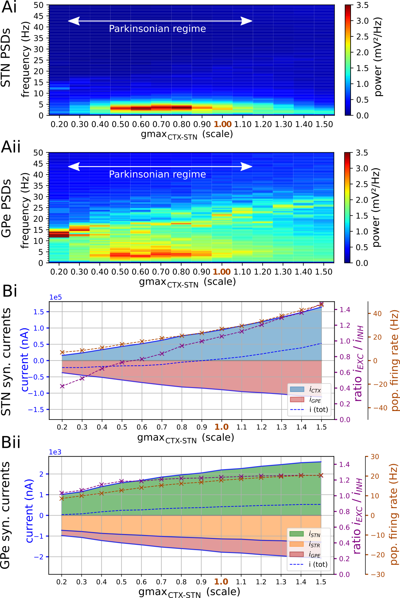
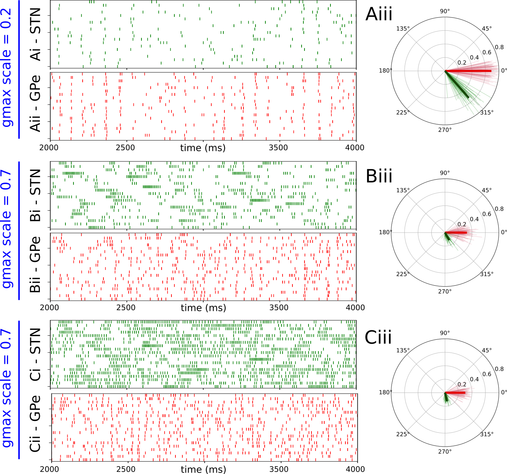
Increasing the strength of GPe-GPe colaterals (Fig. 3.4 - 3.6) similarly increased the level of excitation of STN neurons but by a different mechanism. By increasing self-inhibition within the GPe, and thereby decreasing inhibition of targets in the STN (Fig. 3.4.Bi, red area), the E/I ratio in both populations moved in opposite directions. As the E/I ratio in STN increased toward dominant excitation (Fig. 3.4.B), neural activity shifted from strong low-frequency bursting (characterized by a high intra-burst firing rate and high low-frequency power, Fig. 3.4.Ai, 3.5.Ai, 3.6.B) toward more regular firing with decreasing coefficient of variation of inter-spike intervals (CVISI) and intra-burst firing rate (Fig. 3.5.Bi, 3.6.B). The E/I ratio and population firing rate in the GPe showed a saturating characteristic (Fig. 3.4.Bii) caused by the negative feedback structures inherent in the loop as before (Fig. 3.4.B) as it was progressively disinhibited. GPe neurons were more strongly entrained to the emergent oscillation (17-26 Hz) whereas STN spiking showed a weaker phase preference (Fig. 3.5.Aiii, Biii, 3.6.A). This result was the same whether the instantaneous phase was extracted from the STN or GPe population.
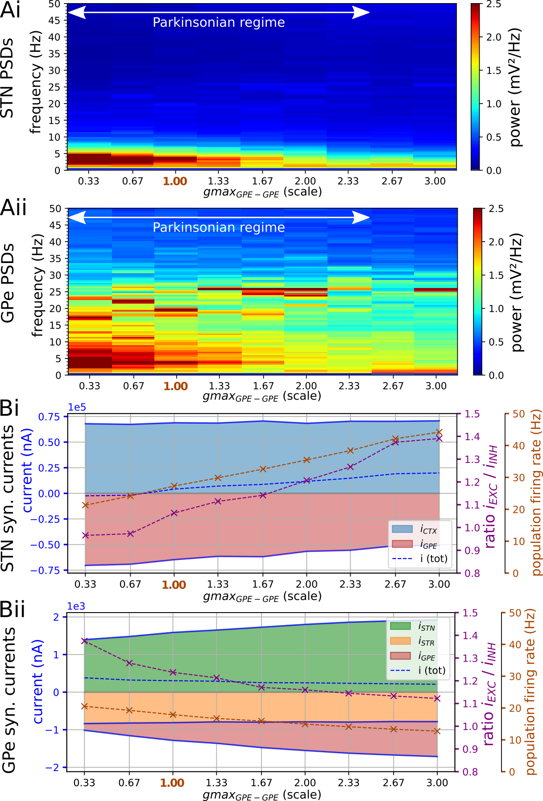
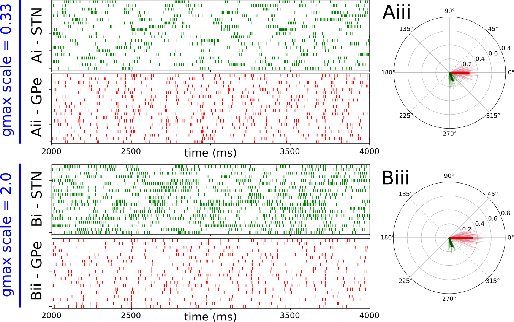
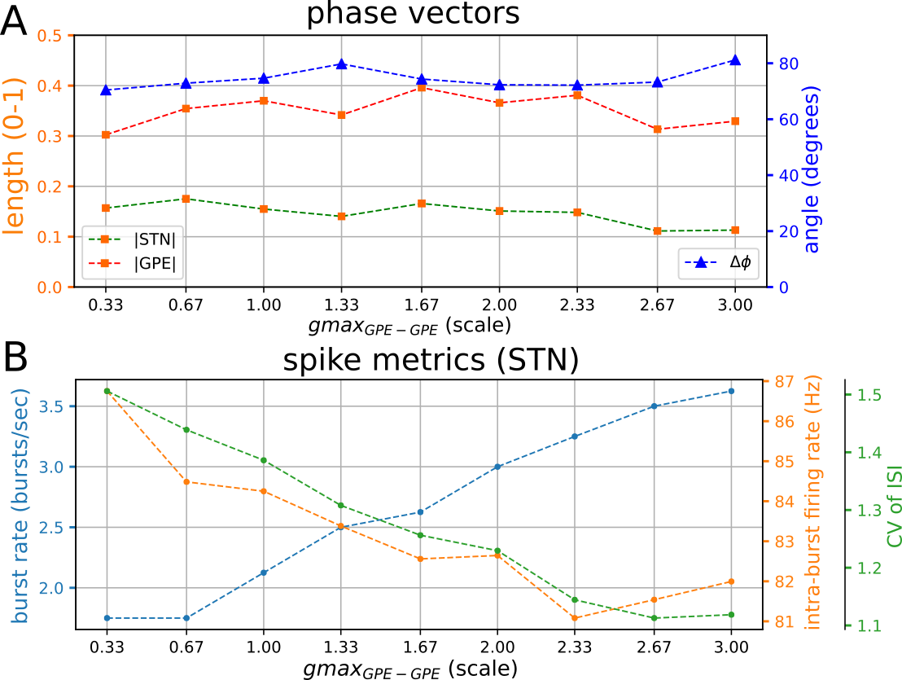
Following dopamine depletion the inhibitory GPe-STN connection is strengthened by a proliferation of synapses and increased decay kinetics of GABA currents [99]. Moreover, the expression of both GABAA [99] and GABAB [328] receptors is upregulated leading to larger evoked synaptic currents. To investigate the effects of increased inhibition and altered kinetics of inhibitory post-synaptic currents (IPSC) in STN neurons on network activity patterns, an increase in the GABAA and GABAB conductances was simulated and the relative contribution of both currents was altered.
Increasing the conductance of both GABAA and GABAB synapses lead to an increase in low-frequency bursting of STN neurons (Fig. 3.7.A, 3.8.A-B). Bursting was periodic at low frequencies ( 2-5 Hz) but was not synchronized between cells (Fig. 3.8.Bi). Increasing the conductance also shifted the firing mode of STN neurons towards longer bursts with higher intra-burst firing rate against a lower background firing rate, characterized by a high coefficient of variation of ISIs (Fig 3.7.B, 3.9.B). Bursting with high intra-burst firing rates is mediated by a shift toward net inhibition in STN neurons (Fig 3.7.Bi), leading to increased availability of voltage-sensitive and channels through de-inactivation at hyperpolarized membrane voltages [120, 21, 140]. The GPe neuron model does not possess the same high density of channels that underlies plateau potentials and strong bursting, and therefore has a lower tendency towards burst firing. While STN neurons were more weakly entrained to the beta oscillation they preferentially fired in an interval leading the GPe by approximately 65 degrees (Fig 3.8.Aiii-Biii, 3.9.A). The shift toward low-frequency, fast bursting coincided with an increase in synchronization in the network, as measured by the population vector length of the STN and GPe.
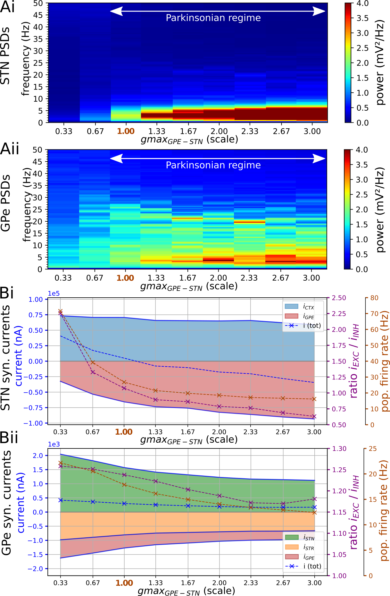
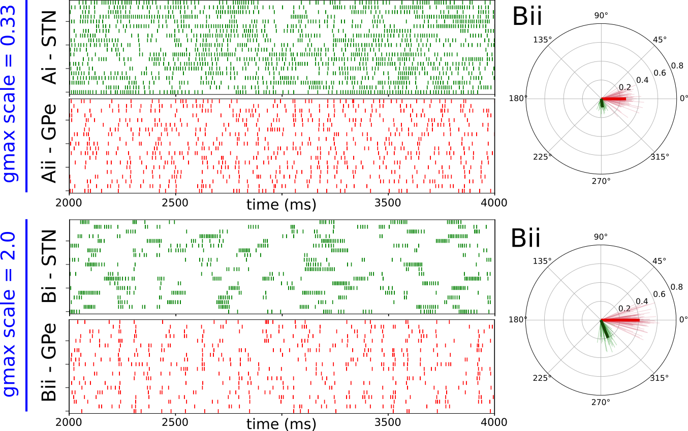
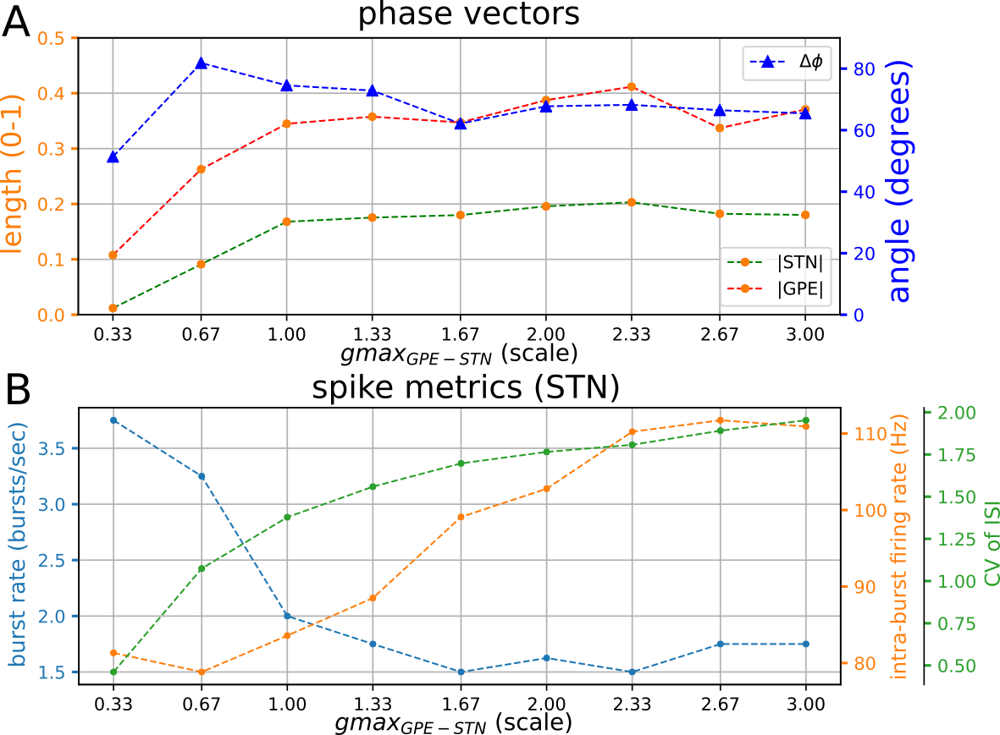
To investigate the effect of IPSC kinetics on the generation of beta oscillations within the network, the relative strength of the GABAA and GABAB-mediated current was changed by decreasing the GABAB conductance by 50% and increasing the GABAA conductance progressively (Fig 3.10). As this increased the level of inhibition in STN neurons, it resulted in a small shift in the oscillation frequency across the parameter sweep (Fig 3.10.A). The simulation results showed that the slow nature of the GABAB-mediated current prevented GPe neurons from patterning their targets with short duration IPSC required for strong entrainment in the 20-30 Hz range. When the GABAA conductance was increased, and the GABAB conductance decreased accordingly, both STN and GPe neurons entrained strongly to the beta rhythm as evident in phase histograms and spike trains (Fig. 3.11). When the experiment of Fig. 3.2 was repeated in the adjusted network with a higher GABAA to GABAB ratio, the oscillation frequency in both STN and GPe also showed a clear sensitivity to the strength of the Poisson distributed cortical excitatory input (Fig 3.10.B).
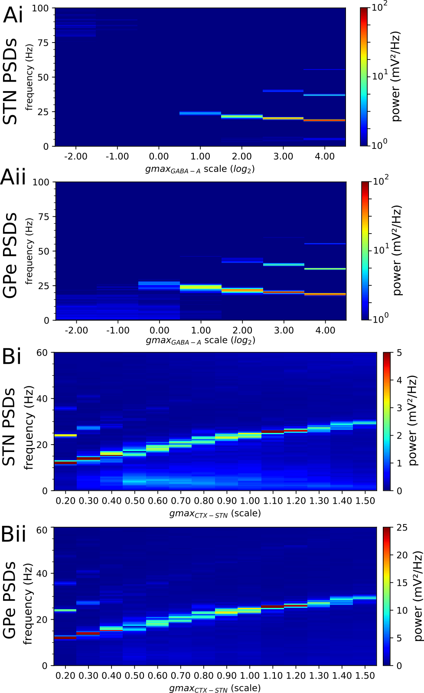
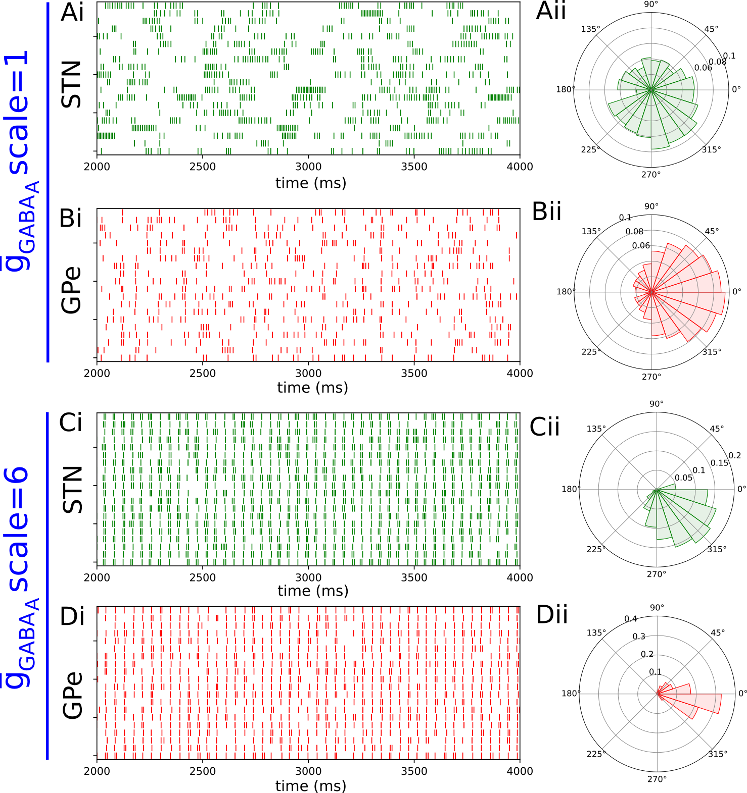
The degree of phase locking of the STN-GPe network to synchronous cortical rhythms and its sensitivity to intrinsic network parameters was then examined. The network was simulated with cortical inputs modeled as spike trains exhibiting sparse, synchronous bursts. The frequency of the synchronous cortical inputs was first increased from 3 Hz to 60 Hz and the frequency response and phase locking strength of the STN-GPe loop was estimated (Fig. 3.12 - 3.13). Spectral power and phase locking, measured by the population vector length, were strongest when the cortical oscillation frequency was close to the network’s endogenous oscillation frequency (Fig. 3.12.C, 3.13.A), indicating a resonance effect. Spectral power at the oscillation frequency was increased considerably above that observed for Poisson distributed cortical inputs (compare Fig. 3.12.A-AB to Fig. 3.2.Ai-Aii). Moreover, the frequencies that were amplified by the STN-GPe network corresponded well to the beta-band, i.e. 13-30 Hz (Fig. 3.12.C). To study the dependence of the resonance peak on the excitation-inhibition balance in the STN, the cortical input strength was then varied while the oscillation frequency remained fixed (Fig. 3.13.B-C). The range of synaptic conductances was chosen so that the STN population firing rate traversed the experimentally reported range of 17-37 Hz [181, 224] in the dopamine depleted state during cortical activation (Fig. 3.14.C). Maximum phase locking coincided with frequency of maximum endogenous oscillation power observed in the absence of oscillatory inputs (Fig. 3.13.B-C). The results demonstrate how the resonant frequency of the network can be shifted by changing the excitation-inhibition balance, biasing the network toward a slower or faster oscillation. GPe neurons synchronized stronger to the oscillatory input compared to STN neurons (Fig. 3.12.C, 3.13.A, 3.15), which showed a tendency to burst, mirroring the results for spontaneous synchronization in the autonomous STN-GPe network. Analogous to the autonomous loop, when the slow bursting behaviour was reduced by shifting the GPe to STN synaptic current from GABAB to faster GABAA receptors, synchronization and phase locking of both STN and GPe neurons was greatly increased.
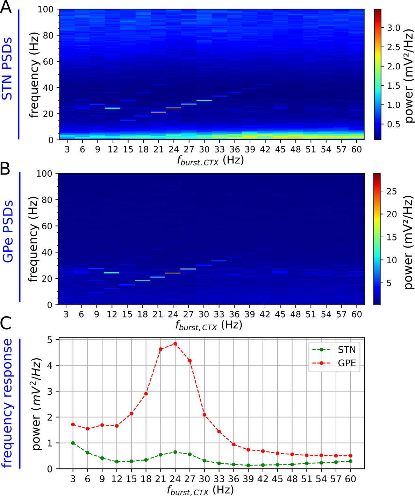
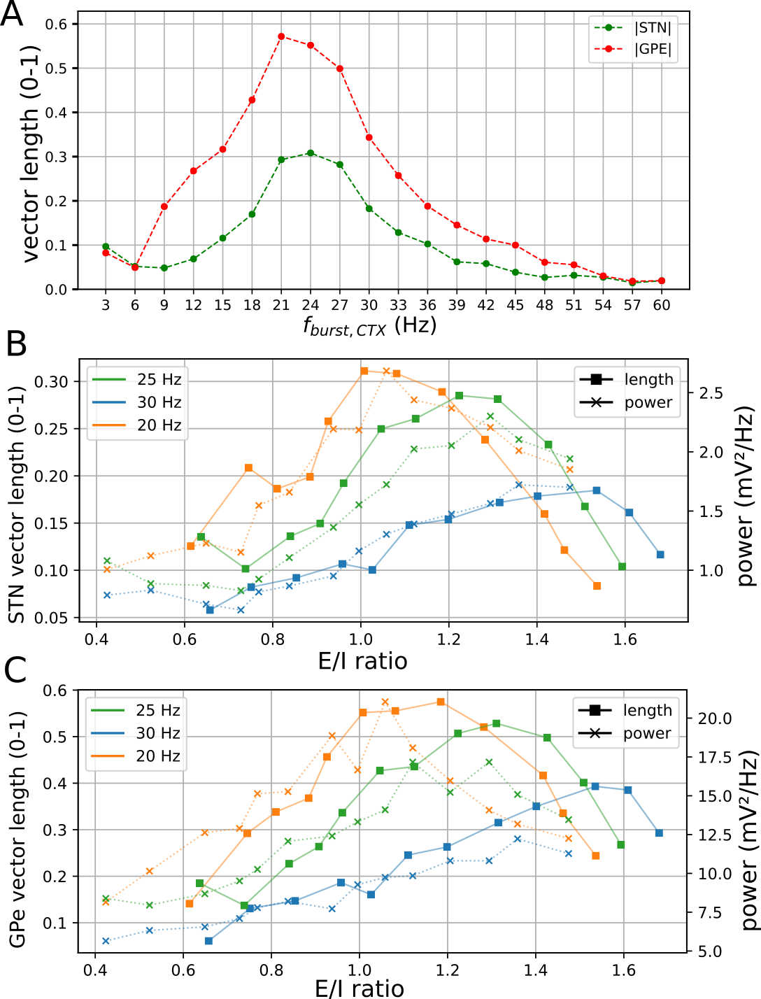
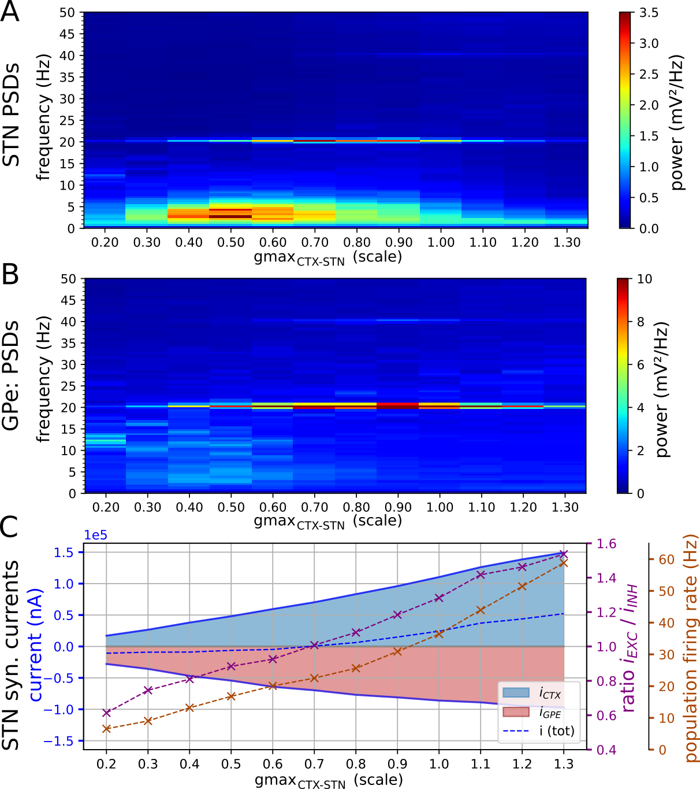
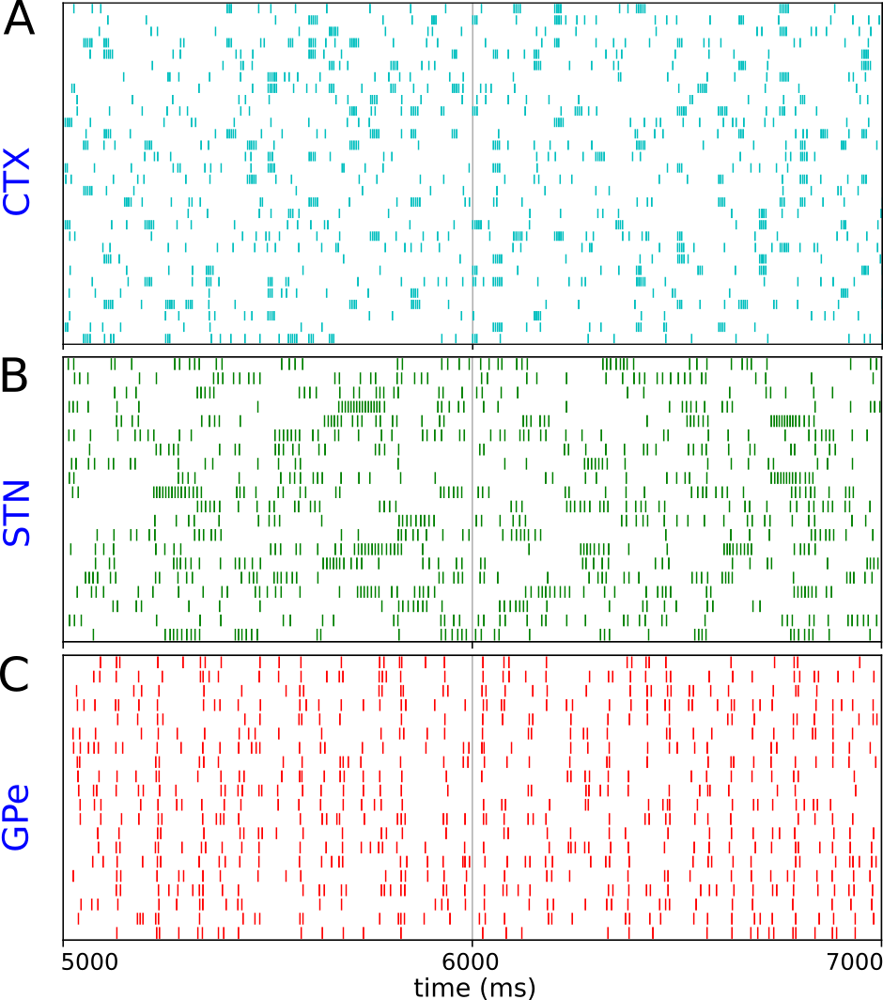
Striatal microcircuits exhibit beta-band oscillations in healthy primates [102] and parkinsonian rodent models [235, 326] and have been hypothesized to be part of the pacemaking circuit that generates them. In the previous section, the STN-GPe network was shown to generate weak beta-band oscillations in the absence of exogenous beta inputs (Fig. 3.2, 3.4, 3.7), and to phase lock to cortical beta-band inputs which amplified oscillatory activity (Fig. 3.12 - 3.13). A potential role of the pallido-striatal loop could be to amplify beta-band oscillations in the STN-GPe network to a more pathological level, as part of a double resonant loop converging on the GPe. A suggested mechanism is that altered striatal activity in PD could shift the phase of firing of the GPe relative to the STN to one that supports STN phase locking through increasing the availability of and channels post-inhibition and pre-excitation [21, 223, 225]. Alternatively, oscillations that originate in striatal circuits could be transmitted via the striato-pallidal projection and thus introduced into the STN-GPe network [235, 67]. Of the two loops converging on GPe neurons, inhibitory striatal afferents would be better suited to interrupt ongoing activity and influence the phase compared to excitatory STN afferents. Hence, the iMSN to GPe projection could play an important role in patterning neural activity in the STN-GPe network.
Phase vector plots in the previous section show that STN and GPe neurons settle into a particular phase relationship where STN leads GPe by 60-90 degrees which contributed to sustaining beta-band oscillations. It was hypothesized that inhibitory inputs from the striatum would either disrupt this phase relationship, thereby suppressing beta-band oscillations, or reinforce them depending on where in the phase of the beta oscillation they arrive. To investigate this hypothesis, surrogate striatal spike trains exhibiting beta frequency bursts were generated and the phase with respect to the incoming cortical oscillation was increased in increments of 45 degrees by varying the onset time of bursts. As iMSN-GPe synapses exhibit short-term facilitation, bursts administered through this projection led to an increase in inhibition to the GPe that was greater than the relative increase in spike rate. To compensate for this effect and maintain a physiological firing rate range of the GPe neurons, the peak conductance of iMSN-GPe synapses was reduced by 60%.
Varying the phase of striatal relative to cortical bursts revealed that populations connected by an inhibitory projection, i.e. iMSN, GPe, and STN maintained a rigid phase relationship with respect to the cortical oscillation (Fig. 3.17: population vectors in green, red, purple formed a rigid frame that rotated relative to the cyan-colored cortical population vector). The local maximum in phase locking occurred when excitatory CTX and inhibitory GPe afferents to STN fired in anti-phase, occurring when the CTX-iMSN phase difference was set to 225 degrees (Fig. 3.16.B, 3.17.B, 3.18.B). This supports the feedback inhibition hypothesis where cortical patterning is promoted when GPe-STN inhibition is offset in phase relative to cortical excitation in PD [21, 223, 225]. The changing phase relationship of cortical spiking relative to the three other populations also shifted the balance of excitatory and inhibitory currents in the STN (Fig. 3.16.Bi). Maximum phase locking occurred where the STN was maximally inhibited (E/I ratio 1.1, population firing rate 21 Hz), whereas minimum phase locking coincided with maximum excitation (E/I ratio 1.3, population firing rate 40 Hz). In the GPe this relationship between phase locking strength and firing rate was reversed (Fig. 3.16.Bii) whereas the relationship with E/I ratio showed no clear trend. The optimal phase relationship of 225 degrees further strengthened phase locking to the applied beta rhythm compared to the situation with only cortical oscillatory inputs. Maximum vector length was increased by a factor of two, confirming increased synchronization, in both populations when compared to the case where only cortical beta frequency inputs were simulated. Maximum power at the oscillation frequency was also increased by a factor of approximately 2.7 in STN and 5.2 in GPe.
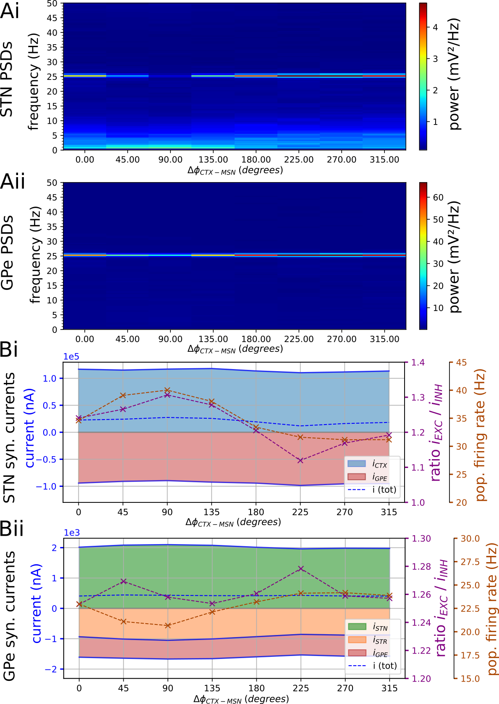
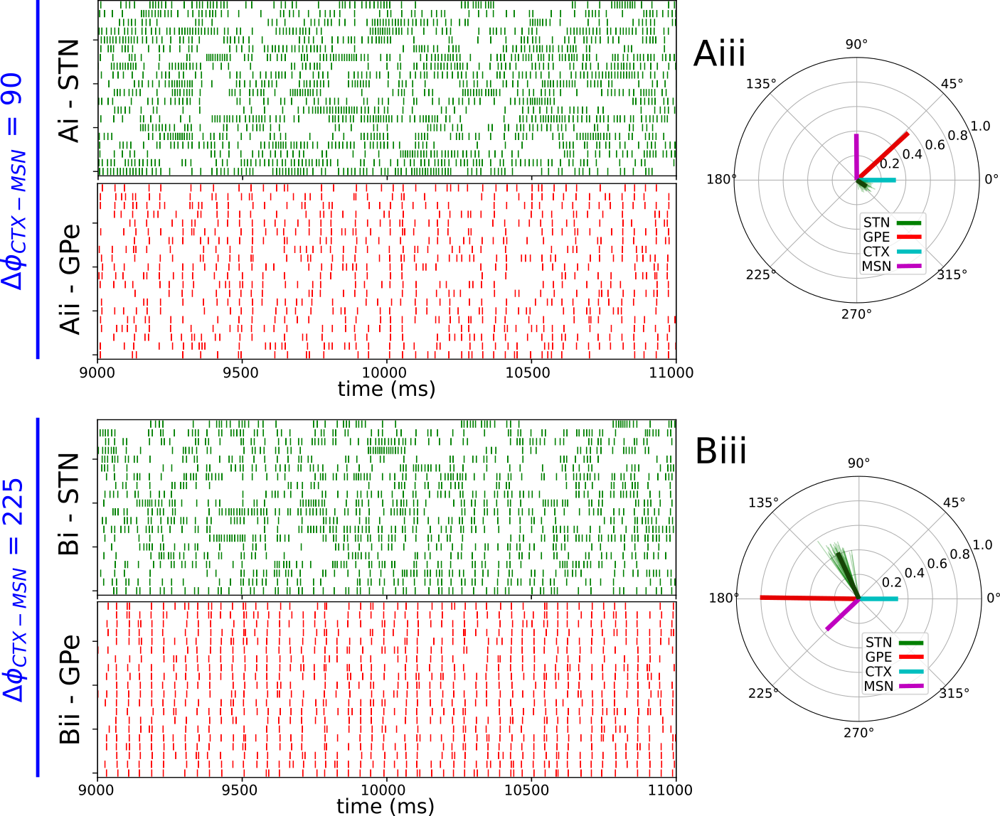
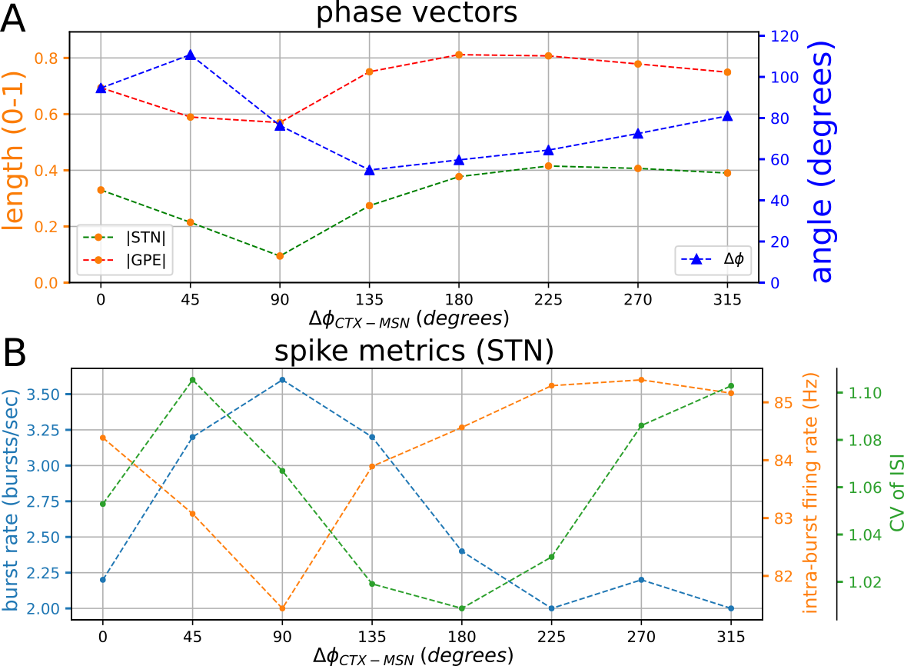
To further illustrate the interaction between synaptically coupled STN and GPe neurons in the model under conditions of synchronous oscillatory beta-band activity, the mechanism of phase locking of STN cells is presented in Fig. 3.19. Pooled cortical spike trains (Fig. 3.19.A-B, green) illustrate how sparse cortical beta bursts (Fig. 3.15.A) result in distributed synaptic inputs to individual STN neurons that are not tightly phase locked, but have a combined firing rate that is modulated at the beta frequency. While these exogenous cortical inputs had high spike timing variability, STN and GPe spikes became highly structured and tightly locked to the beta oscillation through the feedback inhibition mechanism. The cortical beta modulation is transmitted to the STN and then to the GPe through their excitatory projections (see phase vectors in Fig. 3.17). When the inhibitory feedback arrives back in STN this shuts down spiking (Fig. 3.19.A) and simultaneously primes the cell for the next period of increased cortical excitation by de-inactivating channels (Fig. 3.19.C) and channels. As the cortical firing rate rises again, synaptic currents (Fig. 3.19.B) combine with dendritic currents to overcome any lingering inhibition and cause the next wave of phase-locked STN spikes. The striatal beta inputs further decreased spiking variability of GPe neurons by narrowing their time window of firing through phasic inhibition (purple phase vector in Fig. 3.17).
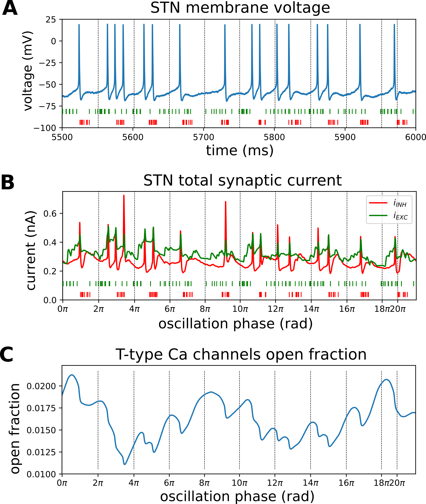
A new model of the STN-GPe network is presented that incorporates biophysically detailed multi-compartment cell models. The individual STN and GPe cell models capture the interaction of intrinsic and synaptic membrane currents with nonuniform subcellular distributions across the dendritic structure, which can not be captured in single compartment models. The model illustrates how phase locking of STN and GPe neurons, and increased bursting of STN neurons, can arise from the interaction of these currents when their relative strengths and temporal relationships are altered. The STN-GPe model network showed an intrinsic susceptibility to beta-band synchrony that manifest as weak, autonomously-generated endogenous oscillations and selective amplification of exogenous beta-band synaptic inputs at the network’s preferred oscillation frequency. The frequency at which endogenous beta oscillatory activity occurred varied with the ratio of excitatory to inhibitory currents to the STN. Varying the phase relationships between external beta-frequency inputs to the network through cortical and striatal pathways further increased or suppressed the level of amplification of cortical beta inputs by modulating the temporal dispersion of action potentials in STN neurons and thereby influencing the precision of phase locking. Varying synaptic strengths within the network affected the balance of excitation and inhibition in both STN and GPe neurons and produced a rich set of behaviors, not only modulating firing rates but also affecting synchronization and bursting properties of neurons. Homeostatic mechanisms mediated by feedback connections and short-term synaptic plasticity dynamics served to stabilize the excitation-inhibition balance in the GPe and reduced the sensitivity of its population firing rate to variations in pre-synaptic rates.
In the autonomous STN-GPe network, under conditions of Poisson distributed external synaptic inputs, STN neurons exhibited weak synchronization to the endogenous beta rhythm but retained a weak phase preference with respect to the stronger oscillation in the GPe population (Fig. 3.3 - 3.8). The synchronization strength of STN neurons was found to depend on the relative strength of GABAA and GABAB receptors in STN dendrites (Fig. 3.10, 3.11), with an increase in the proportion of fast-acting GABAA receptors resulting in an increase in the strength of oscillation. The endogenous oscillation frequency of the STN-GPe network was further influenced by the balance of excitatory and inhibitory currents in the STN. This balance affected the net level of excitatory drive in the network, shifting the oscillation frequency towards the higher beta range for increased levels of excitatory drive (Fig. 3.2.A, 3.10.B). Besides affecting population firing rates and the frequency of synchronous oscillations, the excitation-inhibition balance also strongly influenced the firing pattern of STN neurons: for a low ratio of excitation to inhibition and sufficiently strong inhibitory currents, STN neurons transitioned to a firing mode characterized by low-frequency tight bursts (high intra-burst firing rate, Fig. 3.2- 3.9). Low-frequency bursting was periodic at 2-5 Hz but was not synchronized between cells. This shift in firing pattern towards sparse, tight bursting is in correspondence with changes in burst-related measures such as intra-burst firing rate and sub-beta band power that are most predictive of akinetic-bradykinetic symptoms in humans [323] and monkeys [314]. The firing rate and pattern of GPe neurons was less sensitive than that of STN neurons to variations in its excitatory or inhibitory drive due to the contribution of negative feedback control by homeostatic mechanisms that operated in synergy to stabilize its E/I ratio. However, GPe neurons did synchronize more strongly under conditions of low excitatory drive from the STN enabling them to act more autonomously and synchronize through inhibitory collaterals within the GPe network.
When beta-band spiking inputs were applied to the STN-GPe network via cortico-STN afferents, the STN-GPe network phase locked to the beta rhythm. Frequencies near the autonomous oscillation frequency for a given E/I ratio were preferentially amplified, reflected in increased phase locking and power of the somatic membrane voltage at that frequency (Fig. 3.12 - 3.13). This is supportive of experimental observations that oscillatory activity in STN is contingent on cortical oscillations [221], likely transmitted though the hyperdirect pathway [343]. Phase locking and beta frequency power were further strengthened by the addition of striatal oscillatory inputs with a particular phase relationship to cortical oscillatory inputs (Fig. 3.16 - 3.17). Maximum phase-locking occurred when GPe spiking was aligned in anti-phase with cortical inputs to the STN (Fig. 3.17.B, 3.18.A). When excitation and inhibition occurred in anti-phase, inhibition was likely more effective at transiently hyperpolarizing the membranes of STN neurons, suggested by the local minimum in their E/I ratio (Fig. 3.16.Bi). Strong hyperpolarization can evoke low-latency, temporally precise responses to an excitatory stimulus by de-inactivating and channels, and thereby priming them to respond to excitatory cortical inputs [35]. This mechanism may be responsible for the increase in phase locking under this phase relationship. In contrast, phase alignment of cortical and GPe neurons, corresponding to coincident firing, desynchronized STN neurons (Fig. 3.17.A). These findings are in agreement with recent experimental observations which demonstrate that co-stimulation of GABAergic and glutamergic STN afferents disperses STN spiking and has a desynchronizing effect on the population [338].
Overall, the simulation results are consistent with the hypothesis of cortical patterning and resonance of beta activity within the STN-GPe network through feedback inhibition, whereby GPe inhibition arriving in anti-phase to cortical excitation promotes phase locking of STN neurons to beta-band cortical inputs [21]. The model predicts that exaggerated phase locking of the STN-GPe loop to external oscillatory inputs arises in Parkinsonian conditions as a result of a new balance of excitatory to inhibitory inputs to the STN and GPe. Moreover, it predicts that this exaggerated phase locking is not only contingent on cortical oscillations arriving through the hyperdirect pathway, but that striatal oscillations arriving through the indirect pathway are also crucial in setting an anti-phase relationship between cortex and GPe activity that maximizes cortical patterning of the STN.
The mechanism by which oscillatory neural activity can be generated in the STN-GPe network, by alternating phases of excitation and inhibition in a delayed negative feedback loop, has been described in previous models [349, 154, 191]. The mechanism of oscillation in the model presented here is consistent with this, and the model additionally illustrates the dual role of precisely timed GPe inhibition in transiently reducing STN neuron excitability and hyperpolarising them such that they are primed to respond with bursting to excitatory cortical inputs (Fig. 3.19). Furthermore, it highlights the sensitivity of the network oscillation to the excitation-inhibition balance in each population and synaptic current properties.
In the multicompartment model, endogenously generated beta frequency oscillations were generated within the STN-GPe network when the strength of short duration GABAA-mediated currents was increased. Since the slow timescale, signaling cascade-mediated GABAB currents are typically not modeled, this result can be easily reconciled with results from single-compartment and firing rate models where high gain within the closed-loop is a necessary condition for strong endogenously-generated oscillations in the STN-GPe network [154, 279, 276, 368]. The strength of the endogenous oscillations in the current model was relatively weak, except when inhibitory GPe-STN currents were strongly dominated by fast-acting GABAA-mediated currents and GABAB-mediated slow currents were weak. The oscillation frequency of the network could be modulated by varying the ratio of excitation to inhibition in STN and GPe, and increased as this ratio increased (Fig. 3.13) .
The oscillation frequency of the network has been shown to be sensitive to model parameters in previous computational models of the BGTC network. Specifically, in mean field models of the STN-GPe loop the oscillation frequency showed a strong sensitivity to transmission delays and neuronal membrane time constants [154, 204], and a weaker sensitivity to coupling strengths [154, 278, 213], also demonstrated in a spiking model [368]. In the multicompartment model presented here, where active ion channels on the dendrites contribute to synaptic integration, synaptic strength and effective membrane time constant are interdependent since the membrane charging speed is affected by transient activation of ion channels as a response to synaptic inputs. In biological neurons the balance of excitation and inhibition is tightly regulated through multiple adaptive processes [358], and likely maintains the range of possible oscillation frequencies within a narrow range.
Other than the condition where GPe-STN currents were dominated by fast-acting GABAA currents, strongly synchronized beta-band oscillations appeared only when exogenous beta-band inputs were introduced to the network (Fig. 3.12, 3.16, 3.17). These results, therefore, support a role for resonance with oscillations throughout other basal ganglia loops in the generation of increased STN-GPe beta activity in Parkinson’s disease. Such an oscillatory drive can be provided either by an extrinsic oscillator, assumed to originate within the cortex in the present model, or by reverberation of oscillations in connected feedback loops such as the pallido-striatal loop [67], intra-striatal loops [235], or the larger thalamocortical loop [278, 174, 306, 90]. The model exhibited clear resonance in response to excitatory synaptic inputs to the STN within the beta frequency range (Fig. 3.12 - 3.13). The frequency at which the maximum resonance occurred increased with increasing ratio of excitation to inhibition, similar to the increase in frequency observed in the case of endogenously generated oscillations. Resonance phenomena in the beta-band have previously been reported in computational models of basal ganglia networks, consistent with the modeling results presented here: [278] fitted mean field rate models to experimental data from nonhuman primates and found that the models that best explained the data relied on a strong cortical oscillation to sustain beta-band oscillations ( Hz) in the network. [11] using 10 single compartment STN and GPe neurons observed multiple resonances in the beta-band when varying the strength of striato-pallidal and pallida-subthalamic inhibition, with resonant peaks occurring consistently between 18-21 Hz. Similarly, [108] found that STN neurons in their model exhibited high spontaneous beta-band power (18-30 Hz) and synchronized selectively with cortical input in this frequency range.
One of the main advantages of the biophysically detailed model presented here is that the model can capture the nonuniform distribution of afferent inputs from different pre-synaptic populations across the dendritic tree (Table 3.4, 3.6). This targeting of specific regions of the dendrites by different populations can lead to variations in synaptic integration properties within the structure. This feature is potentially of particular importance in the generation of pathological oscillations given that neuronal phase response curves, used to quantify the tendency of neurons to synchronize to their inputs, differ when stimuli are applied to different subcellular regions in STN and GPe neurons [319, 101]. Hence, a model that incorporates a full complement of ion channel and the synapse groups that interact with them may be expected to yield a more realistic representation of how synchronization arises in the network. In future studies, this could also contribute to a better understanding of neuronal currents contributing to the local field potential in synchronized and asynchronous states, as synaptic and ionic transmembrane currents combine to form the extracellular currents that underpin this signal [52].
A second advantage of such detailed multicompartment models is that parameters have a clear relationship to the underlying biophysical system and are more meaningful in terms of physiological processes compared to models where parameters are lumped, as in single-compartment conductance-based models, or abstracted as in mean-field or generalized integrate-and-fire models. This allows for a more direct translation of experimental findings to parameter variations in the model. On the other hand, detailed cell models are more sensitive to correct estimation of these parameters which is limited by measurements performed for the purpose of model fitting as well as the fitting procedures themselves.
Biophysically detailed models offer new ways to study factors contributing to the development of synchrony. Such models provide a means to investigate the relative contributions of physiological mechanisms to the development of synchrony while controlling other factors in a manner that is not possible in vivo. Though the model presented incorporates a higher level of physiological detail than previous models of the STN-GPe network, several simplifications were necessary due to the model complexity, which should be considered.
To model the effects of dopamine depletion on neuron physiology, downregulation of HCN channel currents with dopamine depletion was modeled as a decrease in its peak conductance. However, dopamine is known to interact with several more ion channels that are involved in linearizing the current-firing rate curve and regularizing autonomous pacemaking of STN neurons [297, 375, 214]. These channels are not included in the STN cell model used here [120]. Recent evidence suggests that the loss of autonomous spiking is a necessary condition for the exaggerated cortical patterning of STN related to motor dysfunction [243]. Better characterization of the ion channels involved in pacemaking and their response to dopamine depletion will enable the systematic exploration of their contribution to STN response properties and pathological firing patterns.
Furthermore, variability in morphological, electrical, and biophysical properties of neurons within populations was not fully captured. In the GPe, two distinct populations have been identified based on their molecular profile and axonal connectivity [225]. Only the prototypic sub-population projecting mainly to STN and preferentially firing in anti-phase to it was modelled here, with the arkypallidal sub-populations projecting back to striatum omitted. Moreover, the GPe cell model used was only one representative candidate out of a large set of models with varying ion channel expression and morphology that matched a corresponding database of electrophysiological recordings [133]. Similarly, the STN model represents a stereotypic characterization rather than a reconstruction of a specific STN cell and does not capture variability in firing properties and receptor expression. In particular, STN neurons in vivo are known to have variable expression of GABAB receptors [116] which cause strong hyperpolarization responses and longer pauses in some but not all STN neurons [140] and a strong rebound burst response [116] in a subset of these. A model that accounts for the biological variability in GABAB expression and that of channels underlying the rebound response may reveal a wider range of responses to increased inhibition among STN neurons. In such a model, beta rhythms could be transmitted to a subset of STN neurons whereas others would show longer pauses with stronger rebound bursts. Moreover, the GABAB synapse model used does not fully account for activation of extrasynaptic GABABR due to GABA spillover [116] which is mediated by tonic high-frequency and coincident firing of afferents [33]. A model where multiple GABAergic synapses act on a shared pool of extrasynaptic GABABR might increase the importance of synchronized pre-synaptic activity in switching STN neurons to a burst-firing mode.
The main sources of firing rate variability in the model were randomness in the input spiking patterns, the presence of surrogate Poisson spike sources in STN and GPe, membrane noise, and randomness in connection patterns and the position of synapses. However, as discussed above, these factors do not capture firing pattern variations arising from variability in morpho-electric cell types between and within sub-populations, and from sub-population specific projection patterns.
The effect of the correlation between cortical and striatal inputs to the network was explored by varying the relative phases of both populations when firing in a synchronous oscillatory pattern (Fig. 3.16 - 3.17). Uncorrelated firing between both populations was also explored (Fig. 3.2-3.15). In reality, beta activity in both populations is likely to be correlated as the striatum receives topographic inputs from the same cortical areas projecting to the STN. Such correlation could lead to transient synchronization effects not explored here, that could promote or counteract additional oscillatory synchronization depending on the exact phase relationships. The effect of varying connectivity patterns between neuronal populations was not directly explored here. The development of neural synchronization and oscillatory activty are known to be dependent on network topology [381], and this effect has previously been studied in a single compartment model of the STN-GPe network [349]. The network topology used in the present study is closest to the random, sparsely-connected topology in Terman et al., (2002) which was shown to develop synchronized bursting patterns at lower frequencies. Choosing different randomly-generated connection matrices did not qualitatively change the results, however altering the connection topology would likely lead to different synchronization properties. Moreover, it is known that connection patterns within the basal ganglia are altered with dopamine depletion, particularly within the striatum [62], leading to a loss of input specificity in neuronal responses [40]. These alterations in connection patterns and resulting effects on spike correlations were not taken into account as cortico-striatal connectivity was not considered in the model. As arkypallidal GPe neurons were not modelled, the pallido-striatal feedback loop was not captured. This additional feedback loop has also been suggested as a candidate pacemaker circuit for beta-band oscillations [67], however, blocking of striatal inputs was not found to reduce the power of beta oscillations in rat GPe [343].
Phase synchronization between spike trains was measured by calculating the vector length of spike trains in the STN and GPe populations based on a band-pass filtered and Hilbert-transformed reference signal [195]. This is a frequency-specific measure of phase synchronization and it was used here to measure spike synchronization in the beta band within populations. A measure of phase synchronization assumes that the signals are also oscillatory in nature, in contrast to alternative, more general measures of spike train synchronization. Because GPe neurons showed a stronger oscillatory characteristic and power in the beta band (see power spectral densities in Fig. 3.4,3.10,3.12,3.14) this resulted in higher measures of phase synchronization in the GPe population compared to the STN. Were synchronization analysis to be performed over a broader frequency band, or without assuming oscillatory signals, different synchronization characteristics may be observed. For example, a frequency-dependent measure of synchronization could be obtained using the composite spike train coherence [350], applied in a combinatorial fashion [244].
Burst detection was performed using a simple threshold on the ISIs and did not take into account variations in the background firing rate in the criterion for distinguishing bursts from background firing. Because of this, the detected burst rates in Fig. 3.9,3.6, 3.18 are strongly correlated with the mean population firing rates. Alternative burst detection algorithm exist that do take this into account. For instance, burst detection based on the Poisson surprise method [199] distinguishes bursts based on the probability of observing a given sequence of spikes in a random Poisson spike train. Such a burst detection algorithm would decrease the number of bursts observed at high background firing rates and would lead to a detection rate more strongly correlated with the CV measurements in Fig. 3.9, 3.6,3.18.
The parameters representing biophysical quantities in the network model were based on experimentally reported values found in the literature where available (Section 3.2). Synaptic strengths were hand-tuned to obtain population firing rates falling within experimentally reported ranges, and are therefore fitted in an ad hoc manner rather than using a formalized optimization procedure and cost function. Besides the considerable computational resources required to perform numerical optimization with a large and detailed network model, a lack of publicly available electrophysiology data made the use of numerical optimization unsuitable for the purpose of this study. In previously published network models of the basal ganglia, optimization is most commonly performed at the level of neuron models, and the strength of synaptic inputs and bias currents are then hand-tuned (e.g. [349, 191, 67, 207, 108]). The same approach was followed here, given that the neuron models used were optimized using multi-objective optimization approaches based on patch-clamp recordings [120, 133]. Models consisting of single-compartment neurons are more amenable to numerical optimization due to their lower computational complexity (e.g. [139]), however the sparsity of data available to constrain optimizations compared to the number of parameters in the model, makes such optimization prone to overfitting. While the same can be said for hand-tuning based on data about mean population firing rates, two observations suggest that at least the behavior of the current model is not the result of an unstable local minimum in its parameter space. First, as indicated by the parameter sweeps of synaptic conductances (Fig. 3.2- 3.8), there is a gradual transition in the network behavior, in terms of its firing rates and oscillation frequencies. Second, it was verified that altering the randomly-generated connection matrices while conserving the numbers of inputs to each cell did not strongly affect the observed firing rates, nor the oscillation or bursting patterns exhibited by the network. However, the network behavior may still be highly sensitive to other parameters, e.g. the biophysical parameters of the neuron models used.
Finally, while there is consistent evidence of increased beta-band oscillatory activity in Parkinson’s disease [325, 224] and a reduction of pathological beta-band activity with interventions that improve symptoms in patients and animal models of the disease [190, 369, 97, 303], strong evidence in support of a causal role for pathological beta activity in the symptoms of Parkinson’s disease has yet to be established. Indeed, recent studies failed to find evidence of any causal link between artificially induced beta-band activity and motor impairment in parkinsonian rats [341], nor between the reduction of beta-band activity and alleviation of motor symptoms [273]. A lack of causality, however, may not necessarily be incompatible with the use of beta-band oscillations as a clinical biomarker, particularly for akinetic-bradykinetic forms of Parkinson’s disease at advanced stages of disease progression. Initial trials of adaptive or closed-loop deep brain stimulation strategies targeted at suppression of beta-band activity have been successful in demonstrating simultaneous reductions in patient symptoms [210, 361]. Beta-band power may thus still be a suitable biomarker to indirectly gauge underlying physiological changes that are more directly related to network dysfunction such as alterations in synaptic strengths and functional connectivity within the network.
In summary, a biophysically detailed model of the parkinsonian STN-GPe network is presented which captures nonuniform distribution of ion channels and synapses in neuronal dendrites. The network model exhibited an intrinsic susceptibility to synchronous neural oscillations within the frequency range of pathological beta-band activity observed in Parkinson’s disease. Oscillations in the autonomous STN-GPe network, however, were too weak to support a pacemaker role as the sole origin of beta-band oscillations in the wider BGTC network in Parkinson’s disease. In particular in the STN, autonomous beta-band oscillations and phase locking of individual cells were weak unless slower GABAB-mediated currents were substantially reduced. Beta-band oscillations were considerably amplified by a relatively sparse cortical beta input, with clear resonance occurring within the beta frequency range. The frequency at which the resonant peak occurred increased with increasing ratio of excitatory to inhibitory STN inputs. beta-band oscillations were further amplified by striatal beta inputs that promoted anti-phase firing of cortex and GPe. These results support the cortical patterning and network resonance hypothesis for the generation of pathological beta-band oscillatory activity in Parkinson’s disease in a multi-compartment model of the STN-GPe network. They also illustrate the potential of the pallido-striatal feedback loop in further amplifying beta oscillations within the network. In the next chapter, the model presented here is extended to include axon models and the effects of DBS on beta-band oscillatory activity in the network are investigated.